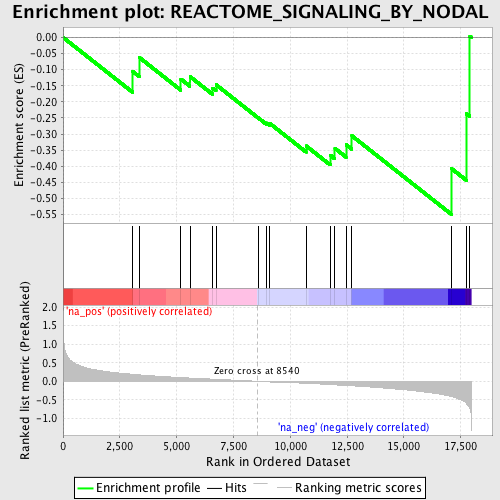
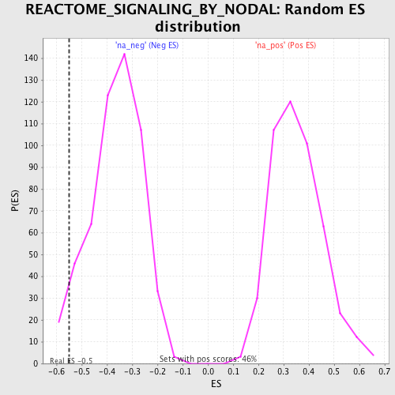

| | | Dataset | GSEA_Cushing_prerank_FC |
| Phenotype | NoPhenotypeAvailable |
| Upregulated in class | na_neg |
| GeneSet | REACTOME_SIGNALING_BY_NODAL |
| Enrichment Score (ES) | -0.5497596 |
| Normalized Enrichment Score (NES) | -1.513449 |
| Nominal p-value | 0.046554934 |
| FDR q-value | 0.16089931 |
| FWER p-Value | 1.0 |
Table: GSEA Results Summary

Fig 1: Enrichment plot: REACTOME_SIGNALING_BY_NODAL
Profile of the Running ES Score & Positions of GeneSet Members on the Rank Ordered List
| PROBE | GENE SYMBOL | GENE_TITLE | RANK IN GENE LIST | RANK METRIC SCORE | RUNNING ES | CORE ENRICHMENT | | 1 | DRAP1 | | | 3066 | 0.188 | -0.1057 | No |
| 2 | SMAD2 | | | 3369 | 0.173 | -0.0630 | No |
| 3 | FURIN | | | 5181 | 0.100 | -0.1291 | No |
| 4 | LEFTY1 | | | 5584 | 0.087 | -0.1215 | No |
| 5 | TDGF1 | | | 6583 | 0.058 | -0.1570 | No |
| 6 | ACVR1C | | | 6731 | 0.053 | -0.1468 | No |
| 7 | CER1 | | | 8588 | -0.001 | -0.2497 | No |
| 8 | SMAD4 | | | 8959 | -0.014 | -0.2656 | No |
| 9 | FOXO3 | | | 9098 | -0.018 | -0.2671 | No |
| 10 | ACVR1B | | | 10694 | -0.055 | -0.3368 | No |
| 11 | ACVR2A | | | 11759 | -0.088 | -0.3658 | No |
| 12 | ACVR2B | | | 11964 | -0.095 | -0.3444 | No |
| 13 | FOXH1 | | | 12456 | -0.112 | -0.3330 | No |
| 14 | SMAD3 | | | 12709 | -0.120 | -0.3054 | No |
| 15 | NODAL | | | 17098 | -0.412 | -0.4075 | Yes |
| 16 | LEFTY2 | | | 17756 | -0.599 | -0.2372 | Yes |
| 17 | PCSK6 | | | 17902 | -0.722 | 0.0041 | Yes |
Table: GSEA details [plain text format]

Fig 2: REACTOME_SIGNALING_BY_NODAL: Random ES distribution
Gene set null distribution of ES for REACTOME_SIGNALING_BY_NODAL